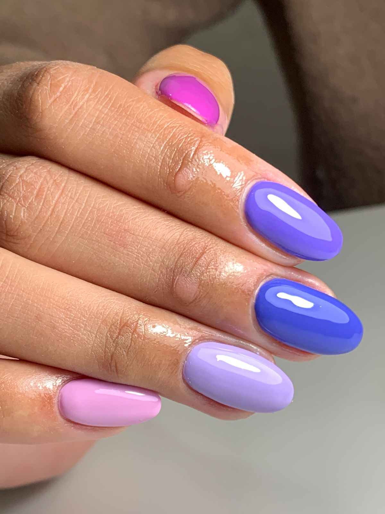
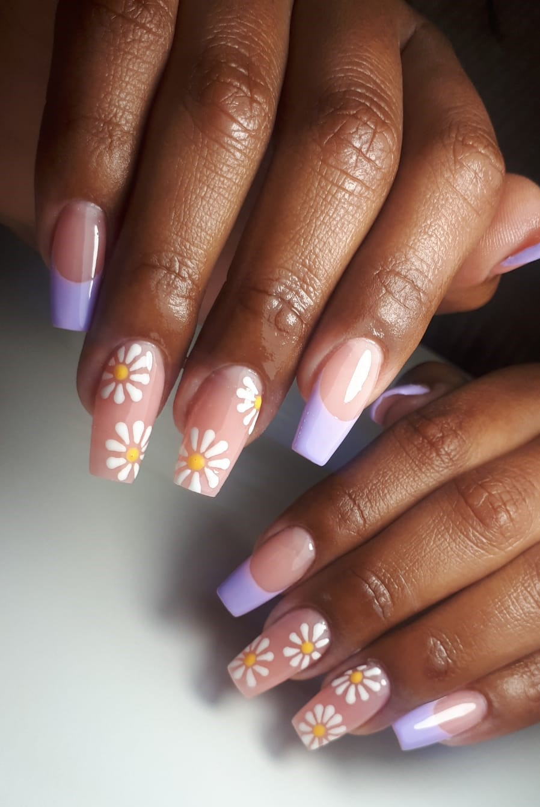
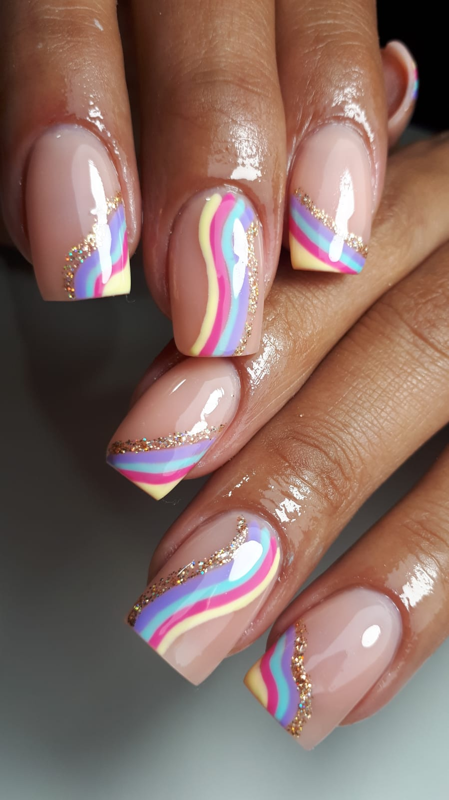
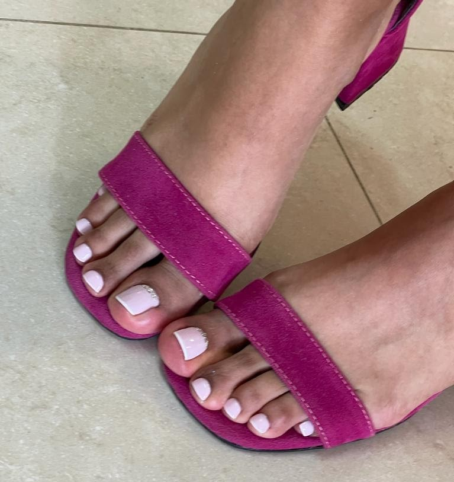
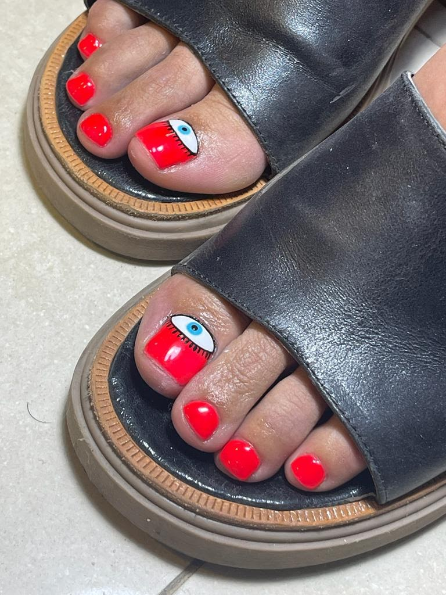
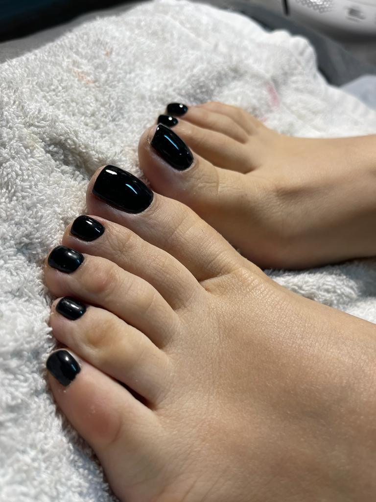

Conoce nuestros Servicios

Manicure BASIC
- -Duracion del turno: 30 min.
- -Las uñas duran 1 semana aproximadamente.
- -Incluye: Limado, cutícula, esmaltado semipermanente e hidratación.

Manicure PREMIUM
- -Duracion del turno: 50 min.
- -Las uñas duran 1 semana aproximadamente.
- -Incluye: Limado, pulido, cutícula, esmaltado semipermanente, exfoliacion y masajes con aceites.

Uñas Esculpidas
Las uñas esculpidas son una gran solución para dejar de dañar tus uñas y qué crezcan sanas y fuertes. Se les dá la forma y extensión qué el cliente prefiera. Tus manos se verán perfectas y naturales instantáneamente.

Podoestética
- -Duracion del turno: 50 min.
- -Incluye: Limado, pulido, cutícula y esmaltado semipermanente. Utilización del bisturí para eliminar durezas y terminaciones con torno para darle una forma delicada y perfecta.

Pedicure BASIC
- -Duracion del turno: 30 min.
- -Las uñas duran 15 días aproximadamente.
- -Incluye: Limado, cutícula, esmaltado semipermanente e hidratación.

Pedicure PREMIUM
- -Duracion del turno: 50 min.
- -Las uñas duran 15 días aproximadamente.
- -Incluye: Limado, pulido, cutícula, esmaltado semipermanente, exfoliacion y masajes con aceites. Utilización del torno para limar impurezas y durezas.